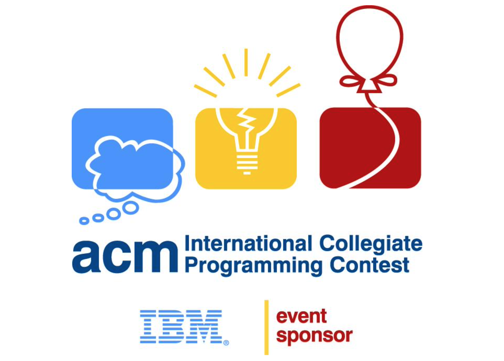
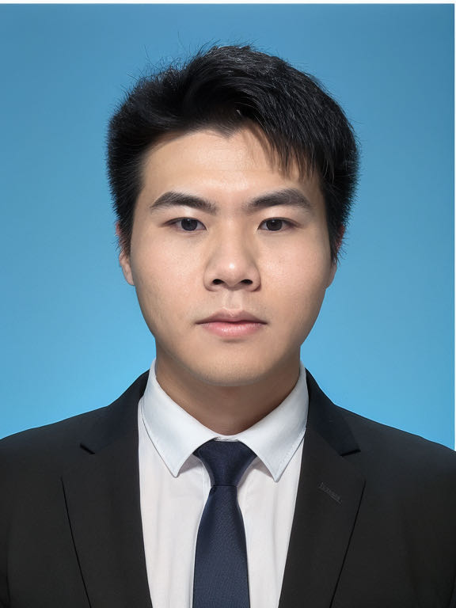

|  |  |
Please click above，Meow >_< !Thank you ,Meow!
Profile of the Site Administrator: A native of Nanjing, Jiangsu, founder and leader of the ACM training team at Jiangsu University of Technology.
Received Honorable Mention in the ICPC Asia Regional Final, a Bronze Medal in the ICPC Asia Regional Contest, and a Bronze Medal in the Jiangsu Province Collegiate Programming Contest.